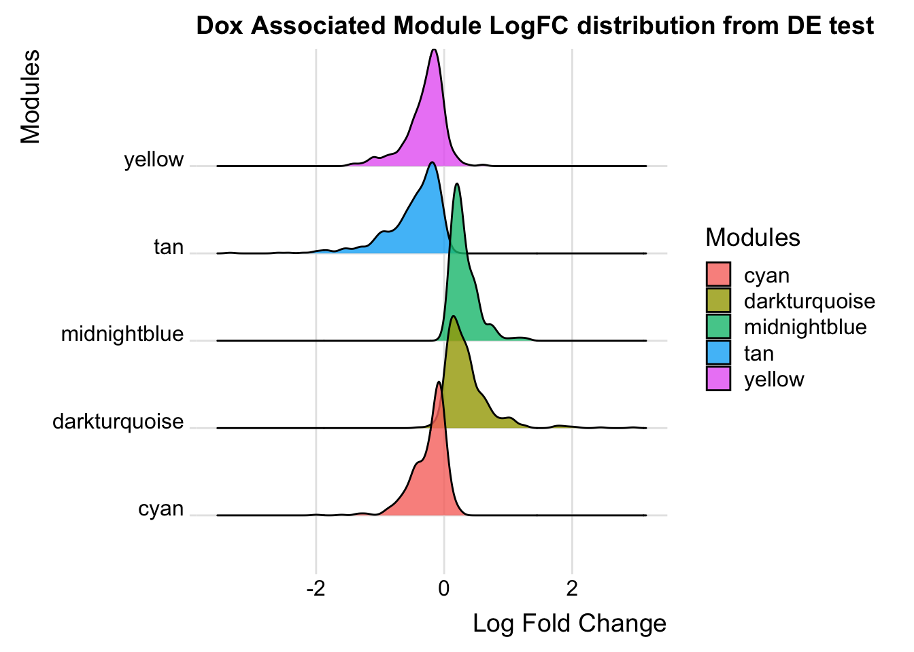
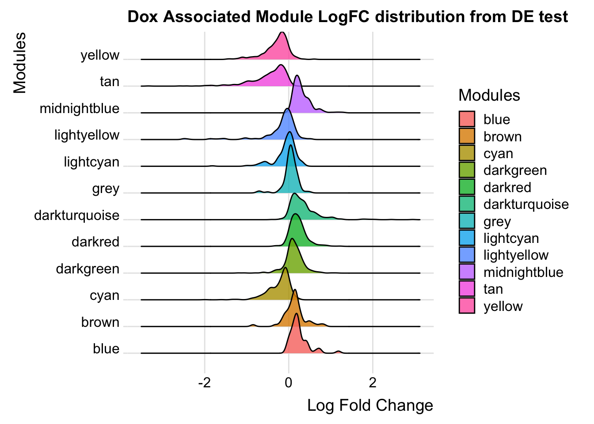
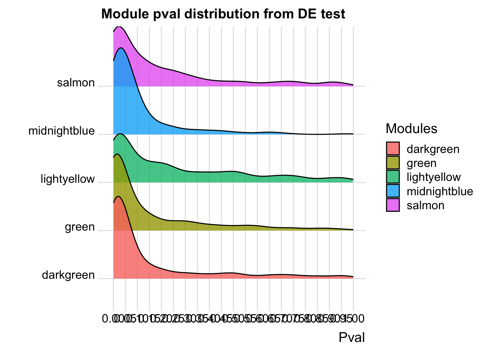
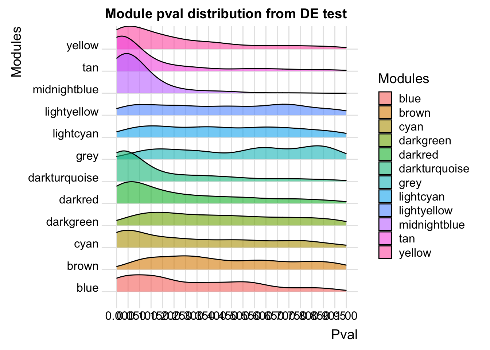

Data_ind_imp_RUVIII_WPCNA
Omar Johnson
2023-12-19
Last updated: 2024-01-04
Checks: 7 0
Knit directory: myproject/
This reproducible R Markdown analysis was created with workflowr (version 1.7.1). The Checks tab describes the reproducibility checks that were applied when the results were created. The Past versions tab lists the development history.
Great! Since the R Markdown file has been committed to the Git repository, you know the exact version of the code that produced these results.
Great job! The global environment was empty. Objects defined in the global environment can affect the analysis in your R Markdown file in unknown ways. For reproduciblity it’s best to always run the code in an empty environment.
The command set.seed(20230911) was run prior to running
the code in the R Markdown file. Setting a seed ensures that any results
that rely on randomness, e.g. subsampling or permutations, are
reproducible.
Great job! Recording the operating system, R version, and package versions is critical for reproducibility.
Nice! There were no cached chunks for this analysis, so you can be confident that you successfully produced the results during this run.
Great job! Using relative paths to the files within your workflowr project makes it easier to run your code on other machines.
Great! You are using Git for version control. Tracking code development and connecting the code version to the results is critical for reproducibility.
The results in this page were generated with repository version 66a78d5. See the Past versions tab to see a history of the changes made to the R Markdown and HTML files.
Note that you need to be careful to ensure that all relevant files for
the analysis have been committed to Git prior to generating the results
(you can use wflow_publish or
wflow_git_commit). workflowr only checks the R Markdown
file, but you know if there are other scripts or data files that it
depends on. Below is the status of the Git repository when the results
were generated:
Ignored files:
Ignored: .DS_Store
Ignored: analysis/.DS_Store
Untracked files:
Untracked: analysis/Data_ind_imp_RUVg_WPCNA.Rmd
Untracked: analysis/Random_bed.R
Unstaged changes:
Modified: Data_ind_Diffabtrial.Rmd
Modified: analysis/Diffabtrial.Rmd
Modified: analysis/Differentially_abundant_proteins_impute.Rmd
Modified: analysis/Differentially_abunddant_proteins.Rmd
Note that any generated files, e.g. HTML, png, CSS, etc., are not included in this status report because it is ok for generated content to have uncommitted changes.
These are the previous versions of the repository in which changes were
made to the R Markdown
(analysis/Data_ind_imp_RUVIII_WPCNA.Rmd) and HTML
(docs/Data_ind_imp_RUVIII_WPCNA.html) files. If you’ve
configured a remote Git repository (see ?wflow_git_remote),
click on the hyperlinks in the table below to view the files as they
were in that past version.
| File | Version | Author | Date | Message |
|---|---|---|---|---|
| Rmd | 66a78d5 | Omar-Johnson | 2024-01-04 | update |
Load Libraries
Read in Data
# 1. RUVg Corrected data across all 10 samples that has been log2 transformed. It has not yet been quantile normalized.
RUVg_Log2_quantnormalized_all10samples <- read.csv(file = "/Users/omarjohnson/Documents/Projects/Dox_Proteomics/Data/Data_Frames/DIA_proteins/RUVIII_Imputed/RUVIII_10samples_log2_notquantilenormalized.csv", header = TRUE, row.names = 1)
# Undo log tranformation
RUVg_Log2_quantnormalized_all10samples <- RUVg_Log2_quantnormalized_all10samples^2
# 2. Toptable correspondding to the Diff.Abundance test from #1
toptable_summary <- read.csv(file = "/Users/omarjohnson/Documents/Projects/Dox_Proteomics/Data/Data_Frames/DIA_proteins/RUVIII_Imputed/Toptable_summary_RUVIII.csv", header = TRUE, row.names = 1)
toptable_summary %>% head() logFC AveExpr t P.Value adj.P.Val B Protein
Q15061 2.444967 18.06896 22.98679 2.938337e-07 2.938337e-07 6.950800 Q15061
O76021 -2.204465 21.49534 -18.66029 1.173790e-06 1.173790e-06 5.995308 O76021
P43694 -1.842058 18.83998 -15.92359 2.895475e-06 2.895475e-06 5.308015 P43694
P01130 -1.815040 19.22969 -14.90808 4.560250e-06 4.560250e-06 4.929984 P01130
O14763 2.068618 20.70338 13.71850 7.513816e-06 7.513816e-06 4.502320 O14763
Q6EMK4 1.804211 18.96917 13.54255 8.117846e-06 8.117846e-06 4.434546 Q6EMK4
threshold_P
Q15061 TRUE
O76021 TRUE
P43694 TRUE
P01130 TRUE
O14763 TRUE
Q6EMK4 TRUE# 3. Meta data for all 10 samples in our study.
Meta <- read.csv(file = "/Users/omarjohnson/Documents/Projects/Dox_Proteomics/Data/Data_Frames/DIA_proteins/RUVIII_Imputed/Meta.csv", header = TRUE, row.names = 1)
Meta Samples Ind Rep Cond Cond_Ind
S1 S1 B_77 Bio Dox B_77_Dox
S3 S3 C_87 Bio Dox C_87_Dox
S5 S5 A_48 Tech Dox A_48_Dox
S7 S7 A_48 Tech Dox A_48_Dox
S9 S9 A_48 Tech Dox A_48_Dox
S2 S2 B_77 Bio Control B_77_Control
S4 S4 C_87 Bio Control C_87_Control
S6 S6 A_48 Tech Control A_48_Control
S8 S8 A_48 Tech Control A_48_Control
S10 S10 A_48 Tech Control A_48_ControlWPCNA- shallow cuts initial objects
# Create summarized experiment object
WGCNA_DF <- SummarizedExperiment(assays = as.matrix(RUVg_Log2_quantnormalized_all10samples))
WGCNA_DFclass: SummarizedExperiment
dim: 4182 10
metadata(0):
assays(1): ''
rownames(4182): A0A0B4J2A2 A0A0B4J2D5 ... Q9Y6X5 Q9Y6Y8
rowData names(0):
colnames(10): S1 S3 ... S8 S10
colData names(0):dim(RUVg_Log2_quantnormalized_all10samples) [1] 4182 10exp_filt <- filter_by_variance(WGCNA_DF, n = 4182)
exp_filt %>% assay() %>% head() S1 S3 S5 S7 S9 S2 S4
A0A0B4J2A2 354.8069 353.2306 372.0819 376.6144 379.9958 360.2320 370.2774
A0A0B4J2D5 574.3405 579.4978 573.6565 567.2299 572.3561 570.9437 563.6120
A0A494C071 329.1523 326.9116 312.8679 331.8781 327.1732 338.6715 338.7939
A0AVT1 204.4731 208.6522 238.7654 228.4611 227.0154 203.4689 210.9748
A0FGR8 410.8660 405.5958 396.7048 400.7486 399.6666 404.7211 405.6068
A0JLT2 320.4362 314.4921 312.0454 300.4122 318.9529 320.9107 320.1861
S6 S8 S10
A0A0B4J2A2 370.6612 367.4160 373.2541
A0A0B4J2D5 563.3968 561.3745 558.3025
A0A494C071 326.3066 336.7386 322.2669
A0AVT1 227.2942 209.2418 214.0801
A0FGR8 402.9930 405.1166 401.9980
A0JLT2 305.5807 293.7263 319.7986Meta Samples Ind Rep Cond Cond_Ind
S1 S1 B_77 Bio Dox B_77_Dox
S3 S3 C_87 Bio Dox C_87_Dox
S5 S5 A_48 Tech Dox A_48_Dox
S7 S7 A_48 Tech Dox A_48_Dox
S9 S9 A_48 Tech Dox A_48_Dox
S2 S2 B_77 Bio Control B_77_Control
S4 S4 C_87 Bio Control C_87_Control
S6 S6 A_48 Tech Control A_48_Control
S8 S8 A_48 Tech Control A_48_Control
S10 S10 A_48 Tech Control A_48_ControlSFT power threshold
# Determine the soft power threshold to get scale free shape
sft <- SFT_fit(exp_filt, net_type = "signed", rsquared = 0.8, cor_method = "pearson")Warning: executing %dopar% sequentially: no parallel backend registered Power SFT.R.sq slope truncated.R.sq mean.k. median.k. max.k.
1 3 0.55300 2.6600 0.956 929.0 933.0 1260
2 4 0.58000 1.8900 0.964 683.0 681.0 998
3 5 0.48700 1.2500 0.946 526.0 519.0 831
4 6 0.34300 0.7650 0.919 418.0 408.0 711
5 7 0.17500 0.4350 0.865 340.0 331.0 619
6 8 0.02640 0.1390 0.810 283.0 273.0 550
7 9 0.00511 -0.0563 0.786 239.0 229.0 493
8 10 0.09090 -0.2350 0.786 204.0 194.0 447
9 11 0.21900 -0.3800 0.792 176.0 166.0 407
10 12 0.33600 -0.4900 0.816 154.0 143.0 373
11 13 0.43000 -0.5770 0.833 136.0 125.0 344
12 14 0.50500 -0.6480 0.853 120.0 109.0 318
13 15 0.55300 -0.7000 0.872 107.0 95.5 296
14 16 0.59300 -0.7460 0.884 96.2 84.4 276
15 17 0.63600 -0.7920 0.899 86.8 75.0 258
16 18 0.66800 -0.8330 0.910 78.6 66.9 242
17 19 0.69200 -0.8650 0.918 71.5 59.8 228
18 20 0.71000 -0.9150 0.923 65.3 53.6 215No power reached R-squared cut-off, now choosing max R-squared based powersft$plot 
Modify workflow to have a simpler network
exp2gcn2_EDIT <- function (exp, net_type = "signed", module_merging_threshold = 0.8,
SFTpower = NULL, cor_method = "spearman", verbose = FALSE)
{
params <- list(net_type = net_type, module_merging_threshold = module_merging_threshold,
SFTpower = SFTpower, cor_method = cor_method)
norm.exp <- BioNERO:::handleSE(exp)
if (is.null(SFTpower)) {
stop("Please, specify the SFT power.")
}
if (verbose) {
message("Calculating adjacency matrix...")
}
cor_matrix <- BioNERO:::calculate_cor_adj(cor_method, norm.exp, SFTpower,
net_type)$cor
adj_matrix <- BioNERO:::calculate_cor_adj(cor_method, norm.exp, SFTpower,
net_type)$adj
gene_ids <- rownames(adj_matrix)
adj_matrix <- matrix(adj_matrix, nrow = nrow(adj_matrix))
rownames(adj_matrix) <- gene_ids
colnames(adj_matrix) <- gene_ids
if (verbose) {
message("Calculating topological overlap matrix (TOM)...")
}
tomtype <- BioNERO:::get_TOMtype(net_type)
TOM <- WGCNA::TOMsimilarity(adj_matrix, TOMType = tomtype)
dissTOM <- 1 - TOM
geneTree <- hclust(as.dist(dissTOM), method = "average")
if (verbose) {
message("Detecting coexpression modules...")
}
old.module_labels <- dynamicTreeCut::cutreeDynamicTree(dendro = geneTree, maxTreeHeight = 3 ,
minModuleSize = 35, deepSplit = FALSE)
nmod <- length(unique(old.module_labels))
palette <- rev(WGCNA::standardColors(nmod))
old.module_colors <- WGCNA::labels2colors(old.module_labels,
colorSeq = palette)
if (verbose) {
message("Calculating module eigengenes (MEs)...")
}
old.MElist <- WGCNA::moduleEigengenes(t(norm.exp), colors = old.module_colors,
softPower = SFTpower)
old.MEs <- old.MElist$eigengenes
MEDiss1 <- 1 - cor(old.MEs)
old.METree <- hclust(as.dist(MEDiss1), method = "average")
MEDissThreshold <- 1 - module_merging_threshold
if (verbose) {
message("Merging similar modules...")
}
if (cor_method == "pearson") {
merge1 <- WGCNA::mergeCloseModules(t(norm.exp), old.module_colors,
cutHeight = MEDissThreshold, verbose = 0, colorSeq = palette)
}
else if (cor_method == "spearman") {
merge1 <- WGCNA::mergeCloseModules(t(norm.exp), old.module_colors,
cutHeight = MEDissThreshold, verbose = 0, corOptions = list(use = "p",
method = "spearman"), colorSeq = palette)
}
else if (cor_method == "biweight") {
merge1 <- WGCNA::mergeCloseModules(t(norm.exp), old.module_colors,
cutHeight = MEDissThreshold, verbose = 0, corFnc = bicor,
colorSeq = palette)
}
else {
stop("Please, specify a correlation method. One of 'spearman', 'pearson' or 'biweight'.")
}
new.module_colors <- merge1$colors
new.MEs <- merge1$newMEs
new.METree <- hclust(as.dist(1 - cor(new.MEs)), method = "average")
genes_and_modules <- as.data.frame(cbind(gene_ids, new.module_colors))
colnames(genes_and_modules) <- c("Genes", "Modules")
if (verbose) {
message("Calculating intramodular connectivity...")
}
kwithin <- WGCNA::intramodularConnectivity(adj_matrix, new.module_colors)
result.list <- list(adjacency_matrix = adj_matrix, MEs = new.MEs,
genes_and_modules = genes_and_modules, kIN = kwithin,
correlation_matrix = cor_matrix, params = params, dendro_plot_objects = list(tree = geneTree,
unmerged = old.module_colors))
return(result.list)
}Generate network with max merge threshold
net <- exp2gcn2_EDIT(
exp_filt, net_type = "signed", module_merging_threshold = 0.99, SFTpower = 20,
cor_method = "pearson")..connectivity..
..matrix multiplication (system BLAS)..
..normalization..
..done.# Dendogram
plot_dendro_and_colors(net )
NULL# Eigengene networks
WGCNA::plotEigengeneNetworks(net$MEs, "", marDendro = c(3, 5, 2, 6), plotHeatmaps = FALSE)
WGCNA::plotEigengeneNetworks(net$MEs, "", marHeatmap = c(3, 4, 2, 2), plotDendrograms = FALSE)
plot_eigengene_network(net)
NULL# Genes per module
plot_ngenes_per_module(net)
Generate network with desired merge threshold
net <- exp2gcn2_EDIT(
exp_filt, net_type = "signed", module_merging_threshold = 0.8, SFTpower = 20,
cor_method = "pearson")..connectivity..
..matrix multiplication (system BLAS)..
..normalization..
..done.# Dendogram
plot_dendro_and_colors(net )
NULL# Eigengene networks
WGCNA::plotEigengeneNetworks(net$MEs, "", marDendro = c(3, 5, 2, 6), plotHeatmaps = FALSE)
WGCNA::plotEigengeneNetworks(net$MEs, "", marHeatmap = c(3, 4, 2, 2), plotDendrograms = FALSE)
plot_eigengene_network(net)
NULL# Genes per module
plot_ngenes_per_module(net)
Define trait and get eigen proteins!!!!!
Meta Samples Ind Rep Cond Cond_Ind
S1 S1 B_77 Bio Dox B_77_Dox
S3 S3 C_87 Bio Dox C_87_Dox
S5 S5 A_48 Tech Dox A_48_Dox
S7 S7 A_48 Tech Dox A_48_Dox
S9 S9 A_48 Tech Dox A_48_Dox
S2 S2 B_77 Bio Control B_77_Control
S4 S4 C_87 Bio Control C_87_Control
S6 S6 A_48 Tech Control A_48_Control
S8 S8 A_48 Tech Control A_48_Control
S10 S10 A_48 Tech Control A_48_ControlWGCNA_DF$trait <- c(1,1,1,1,1,0,0,0,0,0)
names(WGCNA_DF$trait) <- c("S1", "S3", "S5", "S7", "S9", "S2", "S4", "S6", "S8", "S10")
eigenmatrix <- net$MEs %>% as.matrix()
eigenmatrix MEdarkturquoise MEmidnightblue MEblue MEdarkred MEbrown
S1 0.3316847 0.702906361 0.21469976 -0.18940615 -0.23530818
S3 0.2676576 0.397302435 0.44279718 -0.18275561 -0.12351780
S5 0.4418464 0.094005691 -0.20935065 0.41689364 0.02944623
S7 0.2644925 0.006205442 -0.05667609 0.29203591 0.01128555
S9 0.2443732 0.036646316 -0.13645137 0.35311853 0.09257909
S2 -0.3486641 -0.246948454 -0.30269362 -0.60739929 0.09832213
S4 -0.2831667 -0.181399284 -0.62499562 -0.38116495 0.12237091
S6 -0.2381034 -0.163053302 0.02705012 0.06290333 0.36705225
S8 -0.3831700 -0.389681296 0.34266438 0.09580280 -0.77053578
S10 -0.2969502 -0.255983908 0.30295590 0.13997177 0.40830560
MEdarkgreen MElightyellow MEcyan MElightcyan MEtan MEyellow
S1 0.6187805 0.26911591 -0.4650491627 0.30192778 -0.1472234 -0.11473093
S3 0.3051651 0.06334279 -0.4581826615 -0.04645828 -0.3007258 -0.12972298
S5 -0.2680490 -0.50746549 -0.0767527318 -0.55944524 -0.3647011 -0.65869250
S7 -0.2626983 -0.28905236 -0.0076097724 -0.47743550 -0.3425926 -0.20909973
S9 -0.2131055 -0.40520259 -0.0505589113 0.13416058 -0.3903618 -0.08863173
S2 0.2974798 0.47905012 -0.1866965729 -0.18625067 0.2587093 0.09221122
S4 0.2496336 0.41952433 0.0005777284 -0.09095157 0.3424133 0.02211137
S6 -0.1932517 0.03321715 0.3329409066 0.24539021 0.3296812 0.12835303
S8 -0.3261351 -0.10110272 0.4091629992 0.25581271 0.2669452 0.48160933
S10 -0.2078194 0.03857285 0.5021681785 0.42324999 0.3478558 0.47659291
MEgrey
S1 -0.2228194
S3 0.5366915
S5 0.1098988
S7 -0.2985950
S9 0.3562599
S2 0.3074242
S4 -0.4590669
S6 -0.2261137
S8 0.1384256
S10 -0.2421049Trait-module correlation test
correlationResults <- cor(eigenmatrix, WGCNA_DF$trait, method="pearson")
pvalues <- sapply(1:ncol(eigenmatrix), function(column) cor.test(eigenmatrix[,column], WGCNA_DF$trait)$p.value )
WGCNA_DF$trait <- as.matrix(WGCNA_DF$trait)
Modeigen <- as.matrix(net$MEs)
# Trait data frame
trait_data <- data.frame(
ME = correlationResults %>% rownames(),
Value = correlationResults[,1],
PValue = pvalues
)
trait_data$neglogP <- -log(trait_data$PValue)
trait_data ME Value PValue neglogP
MEdarkturquoise MEdarkturquoise 0.9803405 6.382478e-07 14.2645392
MEmidnightblue MEmidnightblue 0.7823894 7.473845e-03 4.8963457
MEblue MEblue 0.1612881 6.562181e-01 0.4212620
MEdarkred MEdarkred 0.4363224 2.074364e-01 1.5729305
MEbrown MEbrown -0.1426283 6.942705e-01 0.3648936
MEdarkgreen MEdarkgreen 0.1139007 7.540496e-01 0.2822971
MElightyellow MElightyellow -0.5497694 9.969312e-02 2.3056586
MEcyan MEcyan -0.6692349 3.431079e-02 3.3722955
MElightcyan MElightcyan -0.4093573 2.401024e-01 1.4266898
MEtan MEtan -0.9775262 1.086231e-06 13.7327968
MEyellow MEyellow -0.7595018 1.082087e-02 4.5262782
MEgrey MEgrey 0.3044867 3.923284e-01 0.9356562# Plot correlation across modules
ggplot(trait_data, aes(x = ME, y = neglogP, color = Value)) +
geom_segment(aes(xend = ME, yend = 0), linetype = "solid") +
geom_point(size = 10) +
scale_color_gradient(
low = "red",
high = "blue",
name = "corr",
limits = c(-1, 1),
breaks = seq(-1, 1, by = 0.5)
) +
labs(x = "Module", y = "-log(P-value)", title = "Module correlation with DOX treatment") +
theme_minimal() +
theme(axis.text.x = element_text(angle = 45, hjust = 1)) +
geom_hline(yintercept = 2.995732, color = "black", linetype = "dashed") +
geom_text(aes(x = 0, y = 3.5, label = "P-Val Threshold"), hjust = -0.1, vjust = 1.5)
General wrangling
# Get modules that significantly associate with DOX treatment
Signifigant_modules <- trait_data[trait_data$PValue < 0.05, ]$ME
# Get your genes/proteins and modules DF
Gene_mod_DF <- net$genes_and_modules
# Module data gets merged with toptable
toptable_summary %>% head() logFC AveExpr t P.Value adj.P.Val B Protein
Q15061 2.444967 18.06896 22.98679 2.938337e-07 2.938337e-07 6.950800 Q15061
O76021 -2.204465 21.49534 -18.66029 1.173790e-06 1.173790e-06 5.995308 O76021
P43694 -1.842058 18.83998 -15.92359 2.895475e-06 2.895475e-06 5.308015 P43694
P01130 -1.815040 19.22969 -14.90808 4.560250e-06 4.560250e-06 4.929984 P01130
O14763 2.068618 20.70338 13.71850 7.513816e-06 7.513816e-06 4.502320 O14763
Q6EMK4 1.804211 18.96917 13.54255 8.117846e-06 8.117846e-06 4.434546 Q6EMK4
threshold_P
Q15061 TRUE
O76021 TRUE
P43694 TRUE
P01130 TRUE
O14763 TRUE
Q6EMK4 TRUEToptable_Modules <- merge(toptable_summary,
Gene_mod_DF, by.x = "Protein", by.y = "Genes")
# Get the corresponding Gene name IDs
mart <- useMart("ensembl", dataset = "hsapiens_gene_ensembl")
results_Pro_names <- getBM(filters = "uniprotswissprot",
attributes = c("uniprotswissprot", "hgnc_symbol"),
values = toptable_summary$Protein,
mart = mart)
merged_results_Pro_names_AND_Toptable_for_ENZYME <- merge(toptable_summary, results_Pro_names, by.x = "Protein", by.y = "uniprotswissprot")
ENZYME_DF_Toptable <- merged_results_Pro_names_AND_Toptable_for_ENZYME
DE_Enzymes <- ENZYME_DF_Toptable[(ENZYME_DF_Toptable$P.Value < 0.05) & (!is.na(ENZYME_DF_Toptable$ENZYME)), ]$hgnc_symbol
All_Proteins_ENZYMES <- ENZYME_DF_Toptable[(!is.na(ENZYME_DF_Toptable$ENZYME)), ]$hgnc_symbol
# Plotting LogFC in significant modules module
Significant_modules_NoME <- stringr::str_replace(Signifigant_modules, "^ME", "")
Toptable_Modules_Sig <- Toptable_Modules[Toptable_Modules$Modules %in% Significant_modules_NoME, ]
# n-modules total
Toptable_Modules$Modules %>% unique() %>% length()[1] 12# n-sig modules
Signifigant_modules %>% length()[1] 5# Percent sig modules
(Signifigant_modules %>% length()) / (Toptable_Modules$Modules %>% unique() %>% length())[1] 0.4166667# Get modules that significantly associate with DOX treatment
Signifigant_modules <- trait_data[trait_data$PValue < 0.05, ]$ME
# Get your genes/proteins and modules DF
Gene_mod_DF <- net$genes_and_modules
# Subset genes/proteins and modules DF by the significantly correlated modules to DOX
Sig_Gene_mod_DF <- Gene_mod_DF[Gene_mod_DF$Modules %in% Signifigant_modules, ]
# Module data gets merged with toptable
Toptable_Modules <- merge(toptable_summary,
Gene_mod_DF, by.x = "Protein", by.y = "Genes")
Toptable_Modules %>% head() Protein logFC AveExpr t P.Value adj.P.Val B
1 A0A0B4J2A2 -0.01860937 19.07413 -0.1167680 0.9107561 0.9107561 -6.880435
2 A0A0B4J2D5 0.13927306 23.85713 1.3767867 0.2164974 0.2164974 -5.939031
3 A0A494C071 -0.14058717 18.26977 -1.5771899 0.1640256 0.1640256 -5.688462
4 A0AVT1 0.34502513 14.53775 1.3483093 0.2247377 0.2247377 -5.973332
5 A0FGR8 0.06572216 20.13283 0.8553263 0.4240504 0.4240504 -6.491204
6 A0JLT2 0.13152241 17.65312 0.5637308 0.5928414 0.5928414 -6.710078
threshold_P Modules
1 FALSE darkred
2 FALSE midnightblue
3 FALSE lightyellow
4 FALSE darkred
5 FALSE darkgreen
6 FALSE darkgreenToptable_Modules %>% dim()[1] 4182 9Combining diff abundant test with modules
# LogFC Ridge plot
ggplot(Toptable_Modules_Sig, aes(x = logFC, y = Modules, fill = Modules)) +
ggridges::geom_density_ridges(alpha = 0.8) +
labs(title = "Dox Associated Module LogFC distribution from DE test",
x = "Log Fold Change",
y = "Modules") +
ggridges::theme_ridges() Picking joint bandwidth of 0.0675
# LogFC Ridge plot
ggplot(Toptable_Modules, aes(x = logFC, y = Modules, fill = Modules)) +
ggridges::geom_density_ridges(alpha = 0.8) +
labs(title = "Dox Associated Module LogFC distribution from DE test",
x = "Log Fold Change",
y = "Modules") +
ggridges::theme_ridges() Picking joint bandwidth of 0.0567
# Pval Ridge plot
ggplot(Toptable_Modules_Sig, aes(x = P.Value, y = Modules, fill = Modules)) +
ggridges::geom_density_ridges(alpha = 0.8) +
labs(title = "Module pval distribution from DE test",
x = "Pval",
y = "") +
ggridges::theme_ridges()+
scale_x_continuous(breaks = seq(0, 1, by = 0.05), limits = c(0, 1))Picking joint bandwidth of 0.0523
# Pval Ridge plot
ggplot(Toptable_Modules, aes(x = P.Value, y = Modules, fill = Modules)) +
ggridges::geom_density_ridges(alpha = 0.6) +
labs(title = "Module pval distribution from DE test",
x = "Pval",
y = "Modules") +
ggridges::theme_ridges()+
scale_x_continuous(breaks = seq(0, 1, by = 0.05), limits = c(0, 1))Picking joint bandwidth of 0.0754
DE across modules
# Plotting LogFC between DE and non DE proteins
Toptable_Modules$DE_or_Not <- Toptable_Modules$P.Value < 0.05
# Calculate percentage of DE genes for each module
DE_Mod_result <- Toptable_Modules %>%
group_by(Modules) %>%
summarize(
total_genes = n(),
DE_genes = sum(P.Value < 0.05),
percent_DE = (DE_genes / total_genes) * 100
)
print(DE_Mod_result)# A tibble: 12 × 4
Modules total_genes DE_genes percent_DE
<chr> <int> <int> <dbl>
1 blue 45 10 22.2
2 brown 54 0 0
3 cyan 551 127 23.0
4 darkgreen 516 22 4.26
5 darkred 926 215 23.2
6 darkturquoise 517 244 47.2
7 grey 89 1 1.12
8 lightcyan 220 9 4.09
9 lightyellow 237 13 5.49
10 midnightblue 209 110 52.6
11 tan 554 325 58.7
12 yellow 264 79 29.9 # Plot
ggplot(DE_Mod_result, aes(x = Modules, y = percent_DE)) +
geom_bar(stat = "identity") +
labs(
x = "Module",
y = "Percentage of DE genes",
title = "Percentage of DE genes in each module",
fill = "Module"
) +
theme_minimal() +
theme(axis.text.x = element_text(angle = 45, hjust = 1))
# Compute complementary percentage for non-DE genes
DE_Mod_result$percent_nonDE <- 100 - DE_Mod_result$percent_DE
# Reshape data to long format
long_data <- DE_Mod_result %>%
pivot_longer(cols = c(percent_DE, percent_nonDE),
names_to = "type",
values_to = "percentage")
# Plot stacked bar chart
ggplot(long_data, aes(x = Modules, y = percentage, fill = type)) +
geom_bar(stat = "identity") +
labs(
x = "Module",
y = "Percentage",
title = "Percentage of DE and non-DE genes in each module",
fill = "Type"
) +
theme_minimal() +
theme(axis.text.x = element_text(angle = 45, hjust = 1))+
scale_y_continuous(breaks = rev(seq(0, 100, by = 10)))
Significant_modules_NoME[1] "darkturquoise" "midnightblue" "cyan" "tan"
[5] "yellow" GO enrichment acrross dox correlated modules
hubs <- get_hubs_gcn(WGCNA_DF, net)
ontology_categories <- c("ALL")
# Loop over each module and ontology category
for (module in Significant_modules_NoME) {
# Extract hub genes for the current module
module_hubs <- hubs[hubs$Module == module, ]$Gene
# All module proteins
module_proteins <- Toptable_Modules[(Toptable_Modules$Modules == module), ]$Protein
# Get gene names for the proteins in the module
module_genes <- ENZYME_DF_Toptable[ENZYME_DF_Toptable$Protein %in% module_proteins, ]$hgnc_symbol
# Define background genes
background_genes_mod <- ENZYME_DF_Toptable$hgnc_symbol
for (ont in ontology_categories) {
# GO Enrichment
go_enrichment <- enrichGO(gene = module_genes,
OrgDb = org.Hs.eg.db,
keyType = "SYMBOL",
universe = background_genes_mod,
ont = ont,
pvalueCutoff = 1,
qvalueCutoff = 1)
# Plotting the results
# Plotting the results
p <- barplot(go_enrichment, showCategory = 20) +
ggtitle(paste("Module:", module, "- Ontology:", ont))
print(p)
}
}


Significant_modules_NoME[1] "darkturquoise" "midnightblue" "cyan" "tan"
[5] "yellow" Protein corrrelation plots within modules
# Total number of networks edges
get_edge_list(net) %>% dim()[1] 8742471 3Significant_modules_NoME[1] "darkturquoise" "midnightblue" "cyan" "tan"
[5] "yellow" Network darkturquoise
edges_filtered <- get_edge_list(
net, module = c("darkturquoise" ),
filter = TRUE, method = "min_cor", rcutoff = 0.97,
check_SFT = TRUE
)Your graph fits the scale-free topology. P-value:0.999999999785348dim(edges_filtered)[1] 133 3plot_gcn(
edgelist_gcn = edges_filtered,
net = net,
color_by = "module",
hubs = hubs,
top_n_hubs = 30,
show_labels = "tophubs"
)
Network midnightblue
edges_filtered <- get_edge_list(
net, module = c( "midnightblue"),
filter = TRUE, method = "min_cor", rcutoff = 0.95,
check_SFT = TRUE
)Your graph fits the scale-free topology. P-value:0.999999952614632dim(edges_filtered)[1] 119 3plot_gcn(
edgelist_gcn = edges_filtered,
net = net,
color_by = "module",
hubs = hubs,
top_n_hubs = 30,
show_labels = "tophubs"
)
Network cyan
edges_filtered <- get_edge_list(
net, module = c("cyan" ),
filter = TRUE, method = "min_cor", rcutoff = 0.98,
check_SFT = TRUE
)Your graph fits the scale-free topology. P-value:0.976297278270824dim(edges_filtered)[1] 210 3plot_gcn(
edgelist_gcn = edges_filtered,
net = net,
color_by = "module",
hubs = hubs,
top_n_hubs = 30,
show_labels = "tophubs"
)Warning: ggrepel: 3 unlabeled data points (too many overlaps). Consider
increasing max.overlaps
Network tan
edges_filtered <- get_edge_list(
net, module = c("tan"),
filter = TRUE, method = "min_cor", rcutoff = 0.99,
check_SFT = TRUE
)Your graph fits the scale-free topology. P-value:0.929623704629544dim(edges_filtered)[1] 81 3plot_gcn(
edgelist_gcn = edges_filtered,
net = net,
color_by = "module",
hubs = hubs,
top_n_hubs = 30,
show_labels = "tophubs"
)
Network yellow
edges_filtered <- get_edge_list(
net, module = c("yellow"),
filter = TRUE, method = "min_cor", rcutoff = 0.97,
check_SFT = TRUE
)Your graph fits the scale-free topology. P-value:0.998239396174646dim(edges_filtered)[1] 201 3plot_gcn(
edgelist_gcn = edges_filtered,
net = net,
color_by = "module",
hubs = hubs,
top_n_hubs = 30,
show_labels = "tophubs"
)Warning: ggrepel: 2 unlabeled data points (too many overlaps). Consider
increasing max.overlaps
Trait correlation Individual
Drug_trait_results <- trait_data
Meta Samples Ind Rep Cond Cond_Ind
S1 S1 B_77 Bio Dox B_77_Dox
S3 S3 C_87 Bio Dox C_87_Dox
S5 S5 A_48 Tech Dox A_48_Dox
S7 S7 A_48 Tech Dox A_48_Dox
S9 S9 A_48 Tech Dox A_48_Dox
S2 S2 B_77 Bio Control B_77_Control
S4 S4 C_87 Bio Control C_87_Control
S6 S6 A_48 Tech Control A_48_Control
S8 S8 A_48 Tech Control A_48_Control
S10 S10 A_48 Tech Control A_48_ControlWGCNA_DF$trait <- c(1,2,3,3,3,1,2,3,3,3)
names(WGCNA_DF$trait) <- c("S1", "S3", "S5", "S7", "S9", "S2", "S4", "S6", "S8", "S10")
eigenmatrix <- net$MEs %>% as.matrix()
eigenmatrix MEdarkturquoise MEmidnightblue MEblue MEdarkred MEbrown
S1 0.3316847 0.702906361 0.21469976 -0.18940615 -0.23530818
S3 0.2676576 0.397302435 0.44279718 -0.18275561 -0.12351780
S5 0.4418464 0.094005691 -0.20935065 0.41689364 0.02944623
S7 0.2644925 0.006205442 -0.05667609 0.29203591 0.01128555
S9 0.2443732 0.036646316 -0.13645137 0.35311853 0.09257909
S2 -0.3486641 -0.246948454 -0.30269362 -0.60739929 0.09832213
S4 -0.2831667 -0.181399284 -0.62499562 -0.38116495 0.12237091
S6 -0.2381034 -0.163053302 0.02705012 0.06290333 0.36705225
S8 -0.3831700 -0.389681296 0.34266438 0.09580280 -0.77053578
S10 -0.2969502 -0.255983908 0.30295590 0.13997177 0.40830560
MEdarkgreen MElightyellow MEcyan MElightcyan MEtan MEyellow
S1 0.6187805 0.26911591 -0.4650491627 0.30192778 -0.1472234 -0.11473093
S3 0.3051651 0.06334279 -0.4581826615 -0.04645828 -0.3007258 -0.12972298
S5 -0.2680490 -0.50746549 -0.0767527318 -0.55944524 -0.3647011 -0.65869250
S7 -0.2626983 -0.28905236 -0.0076097724 -0.47743550 -0.3425926 -0.20909973
S9 -0.2131055 -0.40520259 -0.0505589113 0.13416058 -0.3903618 -0.08863173
S2 0.2974798 0.47905012 -0.1866965729 -0.18625067 0.2587093 0.09221122
S4 0.2496336 0.41952433 0.0005777284 -0.09095157 0.3424133 0.02211137
S6 -0.1932517 0.03321715 0.3329409066 0.24539021 0.3296812 0.12835303
S8 -0.3261351 -0.10110272 0.4091629992 0.25581271 0.2669452 0.48160933
S10 -0.2078194 0.03857285 0.5021681785 0.42324999 0.3478558 0.47659291
MEgrey
S1 -0.2228194
S3 0.5366915
S5 0.1098988
S7 -0.2985950
S9 0.3562599
S2 0.3074242
S4 -0.4590669
S6 -0.2261137
S8 0.1384256
S10 -0.2421049correlationResults <- cor(eigenmatrix, WGCNA_DF$trait, method="pearson")
pvalues <- sapply(1:ncol(eigenmatrix), function(column) cor.test(eigenmatrix[,column], WGCNA_DF$trait)$p.value )
WGCNA_DF$trait <- as.matrix(WGCNA_DF$trait)
Modeigen <- as.matrix(net$MEs)
# Trait data frame
trait_data <- data.frame(
ME = correlationResults %>% rownames(),
Value = correlationResults[,1],
PValue = pvalues
)
trait_data$neglogP <- -log(trait_data$PValue)
trait_data ME Value PValue neglogP
MEdarkturquoise MEdarkturquoise 0.01955387 9.572423e-01 0.04369876
MEmidnightblue MEmidnightblue -0.44580959 1.965917e-01 1.62662620
MEblue MEblue 0.14158551 6.964161e-01 0.36180791
MEdarkred MEdarkred 0.85283918 1.711263e-03 6.37052346
MEbrown MEbrown 0.10875033 7.649022e-01 0.26800730
MEdarkgreen MEdarkgreen -0.94367078 4.113864e-05 10.09856267
MElightyellow MElightyellow -0.78234717 7.479235e-03 4.89562478
MEcyan MEcyan 0.69613448 2.534596e-02 3.67513573
MElightcyan MElightcyan -0.03713477 9.188796e-01 0.08460016
MEtan MEtan -0.10461575 7.736412e-01 0.25664701
MEyellow MEyellow 0.06034061 8.684845e-01 0.14100560
MEgrey MEgrey -0.09756974 7.885865e-01 0.23751322# Plot correlation across modules
ggplot(trait_data, aes(x = ME, y = neglogP, color = Value)) +
geom_segment(aes(xend = ME, yend = 0), linetype = "solid") +
geom_point(size = 10) +
scale_color_gradient(
low = "red",
high = "blue",
name = "corr",
limits = c(-1, 1),
breaks = seq(-1, 1, by = 0.5)
) +
labs(x = "Module", y = "-log(P-value)", title = "Module correlation with DOX treatment") +
theme_minimal() +
theme(axis.text.x = element_text(angle = 45, hjust = 1)) +
geom_hline(yintercept = 2.995732, color = "black", linetype = "dashed") +
geom_text(aes(x = 0, y = 3.5, label = "P-Val Threshold"), hjust = -0.1, vjust = 1.5)
# Get modules that significantly associate with DOX treatment
Signifigant_modules <- trait_data[trait_data$PValue < 0.05, ]$ME
# Get your genes/proteins and modules DF
Gene_mod_DF <- net$genes_and_modules
# Module data gets merged with toptable
toptable_summary %>% head() logFC AveExpr t P.Value adj.P.Val B Protein
Q15061 2.444967 18.06896 22.98679 2.938337e-07 2.938337e-07 6.950800 Q15061
O76021 -2.204465 21.49534 -18.66029 1.173790e-06 1.173790e-06 5.995308 O76021
P43694 -1.842058 18.83998 -15.92359 2.895475e-06 2.895475e-06 5.308015 P43694
P01130 -1.815040 19.22969 -14.90808 4.560250e-06 4.560250e-06 4.929984 P01130
O14763 2.068618 20.70338 13.71850 7.513816e-06 7.513816e-06 4.502320 O14763
Q6EMK4 1.804211 18.96917 13.54255 8.117846e-06 8.117846e-06 4.434546 Q6EMK4
threshold_P
Q15061 TRUE
O76021 TRUE
P43694 TRUE
P01130 TRUE
O14763 TRUE
Q6EMK4 TRUEToptable_Modules <- merge(toptable_summary,
Gene_mod_DF, by.x = "Protein", by.y = "Genes")
merged_results_Pro_names_AND_Toptable_for_ENZYME <- merge(toptable_summary, results_Pro_names, by.x = "Protein", by.y = "uniprotswissprot")
ENZYME_DF_Toptable <- merged_results_Pro_names_AND_Toptable_for_ENZYME
DE_Enzymes <- ENZYME_DF_Toptable[(ENZYME_DF_Toptable$P.Value < 0.05) & (!is.na(ENZYME_DF_Toptable$ENZYME)), ]$hgnc_symbol
All_Proteins_ENZYMES <- ENZYME_DF_Toptable[(!is.na(ENZYME_DF_Toptable$ENZYME)), ]$hgnc_symbol
# Plotting LogFC in significant modules module
Significant_modules_NoME <- stringr::str_replace(Signifigant_modules, "^ME", "")
Toptable_Modules_Sig <- Toptable_Modules[Toptable_Modules$Modules %in% Significant_modules_NoME, ]
# n-modules total
Toptable_Modules$Modules %>% unique() %>% length()[1] 12# n-sig modules
Signifigant_modules %>% length()[1] 4# Percent sig modules
(Signifigant_modules %>% length()) / (Toptable_Modules$Modules %>% unique() %>% length())[1] 0.3333333# Get modules that significantly associate with DOX treatment
Signifigant_modules <- trait_data[trait_data$PValue < 0.05, ]$ME
# Get your genes/proteins and modules DF
Gene_mod_DF <- net$genes_and_modules
# Subset genes/proteins and modules DF by the significantly correlated modules to DOX
Sig_Gene_mod_DF <- Gene_mod_DF[Gene_mod_DF$Modules %in% Signifigant_modules, ]
# Module data gets merged with toptable
Toptable_Modules <- merge(toptable_summary,
Gene_mod_DF, by.x = "Protein", by.y = "Genes")
Toptable_Modules %>% head() Protein logFC AveExpr t P.Value adj.P.Val B
1 A0A0B4J2A2 -0.01860937 19.07413 -0.1167680 0.9107561 0.9107561 -6.880435
2 A0A0B4J2D5 0.13927306 23.85713 1.3767867 0.2164974 0.2164974 -5.939031
3 A0A494C071 -0.14058717 18.26977 -1.5771899 0.1640256 0.1640256 -5.688462
4 A0AVT1 0.34502513 14.53775 1.3483093 0.2247377 0.2247377 -5.973332
5 A0FGR8 0.06572216 20.13283 0.8553263 0.4240504 0.4240504 -6.491204
6 A0JLT2 0.13152241 17.65312 0.5637308 0.5928414 0.5928414 -6.710078
threshold_P Modules
1 FALSE darkred
2 FALSE midnightblue
3 FALSE lightyellow
4 FALSE darkred
5 FALSE darkgreen
6 FALSE darkgreenToptable_Modules %>% dim()[1] 4182 9# Loop over each module and ontology category
for (module in Significant_modules_NoME) {
# Extract hub genes for the current module
module_hubs <- hubs[hubs$Module == module, ]$Gene
# All module proteins
module_proteins <- Toptable_Modules[(Toptable_Modules$Modules == module), ]$Protein
# Get gene names for the proteins in the module
module_genes <- ENZYME_DF_Toptable[ENZYME_DF_Toptable$Protein %in% module_proteins, ]$hgnc_symbol
# Define background genes
background_genes_mod <- ENZYME_DF_Toptable$hgnc_symbol
for (ont in ontology_categories) {
# GO Enrichment
go_enrichment <- enrichGO(gene = module_genes,
OrgDb = org.Hs.eg.db,
keyType = "SYMBOL",
universe = background_genes_mod,
ont = ont,
pvalueCutoff = 1,
qvalueCutoff = 1)
# Plotting the results
# Plotting the results
p <- barplot(go_enrichment, showCategory = 10) +
ggtitle(paste("Module:", module, "- Ontology:", ont))
print(p)
}
}


Drug_trait_results_sub <- Drug_trait_results[,c(1,2,3)]
colnames(Drug_trait_results_sub) <- c("Module", "cor", "pval")
Drug_trait_results_sub$Trait <- "DOX"
Drug_trait_results_sub Module cor pval Trait
MEdarkturquoise MEdarkturquoise 0.9803405 6.382478e-07 DOX
MEmidnightblue MEmidnightblue 0.7823894 7.473845e-03 DOX
MEblue MEblue 0.1612881 6.562181e-01 DOX
MEdarkred MEdarkred 0.4363224 2.074364e-01 DOX
MEbrown MEbrown -0.1426283 6.942705e-01 DOX
MEdarkgreen MEdarkgreen 0.1139007 7.540496e-01 DOX
MElightyellow MElightyellow -0.5497694 9.969312e-02 DOX
MEcyan MEcyan -0.6692349 3.431079e-02 DOX
MElightcyan MElightcyan -0.4093573 2.401024e-01 DOX
MEtan MEtan -0.9775262 1.086231e-06 DOX
MEyellow MEyellow -0.7595018 1.082087e-02 DOX
MEgrey MEgrey 0.3044867 3.923284e-01 DOXtrait_data ME Value PValue neglogP
MEdarkturquoise MEdarkturquoise 0.01955387 9.572423e-01 0.04369876
MEmidnightblue MEmidnightblue -0.44580959 1.965917e-01 1.62662620
MEblue MEblue 0.14158551 6.964161e-01 0.36180791
MEdarkred MEdarkred 0.85283918 1.711263e-03 6.37052346
MEbrown MEbrown 0.10875033 7.649022e-01 0.26800730
MEdarkgreen MEdarkgreen -0.94367078 4.113864e-05 10.09856267
MElightyellow MElightyellow -0.78234717 7.479235e-03 4.89562478
MEcyan MEcyan 0.69613448 2.534596e-02 3.67513573
MElightcyan MElightcyan -0.03713477 9.188796e-01 0.08460016
MEtan MEtan -0.10461575 7.736412e-01 0.25664701
MEyellow MEyellow 0.06034061 8.684845e-01 0.14100560
MEgrey MEgrey -0.09756974 7.885865e-01 0.23751322Ind_trait_sub <- trait_data[,c(1,2,3)]
colnames(Ind_trait_sub) <- c("Module","cor", "pval")
Ind_trait_sub$Trait <- "IND."
Fulltrait_df <- rbind(Drug_trait_results_sub,Ind_trait_sub)
Fulltrait_df Module cor pval Trait
MEdarkturquoise MEdarkturquoise 0.98034045 6.382478e-07 DOX
MEmidnightblue MEmidnightblue 0.78238939 7.473845e-03 DOX
MEblue MEblue 0.16128807 6.562181e-01 DOX
MEdarkred MEdarkred 0.43632243 2.074364e-01 DOX
MEbrown MEbrown -0.14262828 6.942705e-01 DOX
MEdarkgreen MEdarkgreen 0.11390068 7.540496e-01 DOX
MElightyellow MElightyellow -0.54976939 9.969312e-02 DOX
MEcyan MEcyan -0.66923487 3.431079e-02 DOX
MElightcyan MElightcyan -0.40935727 2.401024e-01 DOX
MEtan MEtan -0.97752622 1.086231e-06 DOX
MEyellow MEyellow -0.75950185 1.082087e-02 DOX
MEgrey MEgrey 0.30448670 3.923284e-01 DOX
MEdarkturquoise1 MEdarkturquoise 0.01955387 9.572423e-01 IND.
MEmidnightblue1 MEmidnightblue -0.44580959 1.965917e-01 IND.
MEblue1 MEblue 0.14158551 6.964161e-01 IND.
MEdarkred1 MEdarkred 0.85283918 1.711263e-03 IND.
MEbrown1 MEbrown 0.10875033 7.649022e-01 IND.
MEdarkgreen1 MEdarkgreen -0.94367078 4.113864e-05 IND.
MElightyellow1 MElightyellow -0.78234717 7.479235e-03 IND.
MEcyan1 MEcyan 0.69613448 2.534596e-02 IND.
MElightcyan1 MElightcyan -0.03713477 9.188796e-01 IND.
MEtan1 MEtan -0.10461575 7.736412e-01 IND.
MEyellow1 MEyellow 0.06034061 8.684845e-01 IND.
MEgrey1 MEgrey -0.09756974 7.885865e-01 IND.Fulltrait_df$annotation <- ifelse(Fulltrait_df$pval < 0.05, "*", "")
ggplot(Fulltrait_df, aes(x = Trait, y = Module, fill = cor)) +
geom_tile() +
geom_text(aes(label = annotation), color = "black", size = 10) +
scale_fill_gradient2(
low = "blue",
high = "red",
mid = "white",
midpoint = 0,
name = "Correlation",
limits = c(-1, 1) # Set the limits for the color scale
) +
labs(x = "Trait", y = "Module") +
theme_minimal() +
theme(axis.text.x = element_text(angle = 45, hjust = 1))
sessionInfo()R version 4.2.0 (2022-04-22)
Platform: x86_64-apple-darwin17.0 (64-bit)
Running under: macOS Big Sur/Monterey 10.16
Matrix products: default
BLAS: /Library/Frameworks/R.framework/Versions/4.2/Resources/lib/libRblas.0.dylib
LAPACK: /Library/Frameworks/R.framework/Versions/4.2/Resources/lib/libRlapack.dylib
locale:
[1] en_US.UTF-8/en_US.UTF-8/en_US.UTF-8/C/en_US.UTF-8/en_US.UTF-8
attached base packages:
[1] grid stats4 stats graphics grDevices utils datasets
[8] methods base
other attached packages:
[1] impute_1.70.0
[2] WGCNA_1.72-1
[3] fastcluster_1.2.3
[4] dynamicTreeCut_1.63-1
[5] BioNERO_1.4.2
[6] reshape2_1.4.4
[7] ggridges_0.5.4
[8] biomaRt_2.52.0
[9] ggvenn_0.1.10
[10] UpSetR_1.4.0
[11] DOSE_3.22.1
[12] variancePartition_1.26.0
[13] clusterProfiler_4.4.4
[14] pheatmap_1.0.12
[15] qvalue_2.28.0
[16] Homo.sapiens_1.3.1
[17] TxDb.Hsapiens.UCSC.hg19.knownGene_3.2.2
[18] org.Hs.eg.db_3.15.0
[19] GO.db_3.15.0
[20] OrganismDbi_1.38.1
[21] GenomicFeatures_1.48.4
[22] AnnotationDbi_1.58.0
[23] cluster_2.1.4
[24] ggfortify_0.4.16
[25] lubridate_1.9.2
[26] forcats_1.0.0
[27] stringr_1.5.0
[28] dplyr_1.1.2
[29] purrr_1.0.2
[30] readr_2.1.4
[31] tidyr_1.3.0
[32] tibble_3.2.1
[33] ggplot2_3.4.3
[34] tidyverse_2.0.0
[35] RColorBrewer_1.1-3
[36] RUVSeq_1.30.0
[37] edgeR_3.38.4
[38] limma_3.52.4
[39] EDASeq_2.30.0
[40] ShortRead_1.54.0
[41] GenomicAlignments_1.32.1
[42] SummarizedExperiment_1.26.1
[43] MatrixGenerics_1.8.1
[44] matrixStats_1.0.0
[45] Rsamtools_2.12.0
[46] GenomicRanges_1.48.0
[47] Biostrings_2.64.1
[48] GenomeInfoDb_1.32.4
[49] XVector_0.36.0
[50] IRanges_2.30.1
[51] S4Vectors_0.34.0
[52] BiocParallel_1.30.4
[53] Biobase_2.56.0
[54] BiocGenerics_0.42.0
[55] workflowr_1.7.1
loaded via a namespace (and not attached):
[1] rappdirs_0.3.3 rtracklayer_1.56.1 minet_3.54.0
[4] R.methodsS3_1.8.2 coda_0.19-4 bit64_4.0.5
[7] knitr_1.43 aroma.light_3.26.0 DelayedArray_0.22.0
[10] R.utils_2.12.2 rpart_4.1.19 data.table_1.14.8
[13] hwriter_1.3.2.1 KEGGREST_1.36.3 RCurl_1.98-1.12
[16] doParallel_1.0.17 generics_0.1.3 preprocessCore_1.58.0
[19] callr_3.7.3 RhpcBLASctl_0.23-42 RSQLite_2.3.1
[22] shadowtext_0.1.2 bit_4.0.5 tzdb_0.4.0
[25] enrichplot_1.16.2 xml2_1.3.5 httpuv_1.6.11
[28] viridis_0.6.4 xfun_0.40 hms_1.1.3
[31] jquerylib_0.1.4 evaluate_0.21 promises_1.2.1
[34] fansi_1.0.4 restfulr_0.0.15 progress_1.2.2
[37] caTools_1.18.2 dbplyr_2.3.3 htmlwidgets_1.6.2
[40] igraph_1.5.1 DBI_1.1.3 ggnewscale_0.4.9
[43] backports_1.4.1 annotate_1.74.0 aod_1.3.2
[46] deldir_1.0-9 vctrs_0.6.3 abind_1.4-5
[49] cachem_1.0.8 withr_2.5.0 ggforce_0.4.1
[52] checkmate_2.2.0 treeio_1.20.2 prettyunits_1.1.1
[55] ape_5.7-1 lazyeval_0.2.2 crayon_1.5.2
[58] genefilter_1.78.0 labeling_0.4.2 pkgconfig_2.0.3
[61] tweenr_2.0.2 nlme_3.1-163 nnet_7.3-19
[64] rlang_1.1.1 lifecycle_1.0.3 downloader_0.4
[67] filelock_1.0.2 BiocFileCache_2.4.0 rprojroot_2.0.3
[70] polyclip_1.10-4 graph_1.74.0 Matrix_1.5-4.1
[73] aplot_0.2.0 NetRep_1.2.7 boot_1.3-28.1
[76] base64enc_0.1-3 GlobalOptions_0.1.2 whisker_0.4.1
[79] processx_3.8.2 png_0.1-8 viridisLite_0.4.2
[82] rjson_0.2.21 bitops_1.0-7 getPass_0.2-2
[85] R.oo_1.25.0 ggnetwork_0.5.12 KernSmooth_2.23-22
[88] blob_1.2.4 shape_1.4.6 jpeg_0.1-10
[91] gridGraphics_0.5-1 scales_1.2.1 memoise_2.0.1
[94] magrittr_2.0.3 plyr_1.8.8 gplots_3.1.3
[97] zlibbioc_1.42.0 compiler_4.2.0 scatterpie_0.2.1
[100] BiocIO_1.6.0 clue_0.3-64 intergraph_2.0-3
[103] lme4_1.1-34 cli_3.6.1 patchwork_1.1.3
[106] ps_1.7.5 htmlTable_2.4.1 Formula_1.2-5
[109] mgcv_1.9-0 MASS_7.3-60 tidyselect_1.2.0
[112] stringi_1.7.12 highr_0.10 yaml_2.3.7
[115] GOSemSim_2.22.0 locfit_1.5-9.8 latticeExtra_0.6-30
[118] ggrepel_0.9.3 sass_0.4.7 fastmatch_1.1-4
[121] tools_4.2.0 timechange_0.2.0 parallel_4.2.0
[124] circlize_0.4.15 rstudioapi_0.15.0 foreign_0.8-84
[127] foreach_1.5.2 git2r_0.32.0 gridExtra_2.3
[130] farver_2.1.1 ggraph_2.1.0 digest_0.6.33
[133] BiocManager_1.30.22 networkD3_0.4 Rcpp_1.0.11
[136] broom_1.0.5 later_1.3.1 httr_1.4.7
[139] ComplexHeatmap_2.12.1 GENIE3_1.18.0 Rdpack_2.5
[142] colorspace_2.1-0 XML_3.99-0.14 fs_1.6.3
[145] splines_4.2.0 statmod_1.5.0 yulab.utils_0.0.8
[148] RBGL_1.72.0 tidytree_0.4.5 graphlayouts_1.0.0
[151] ggplotify_0.1.2 xtable_1.8-4 jsonlite_1.8.7
[154] nloptr_2.0.3 ggtree_3.4.4 tidygraph_1.2.3
[157] ggfun_0.1.2 R6_2.5.1 Hmisc_5.1-0
[160] pillar_1.9.0 htmltools_0.5.6 glue_1.6.2
[163] fastmap_1.1.1 minqa_1.2.5 codetools_0.2-19
[166] fgsea_1.22.0 utf8_1.2.3 sva_3.44.0
[169] lattice_0.21-8 bslib_0.5.1 network_1.18.1
[172] pbkrtest_0.5.2 curl_5.0.2 gtools_3.9.4
[175] interp_1.1-4 survival_3.5-7 statnet.common_4.9.0
[178] rmarkdown_2.24 munsell_0.5.0 GetoptLong_1.0.5
[181] DO.db_2.9 GenomeInfoDbData_1.2.8 iterators_1.0.14
[184] gtable_0.3.4 rbibutils_2.2.15